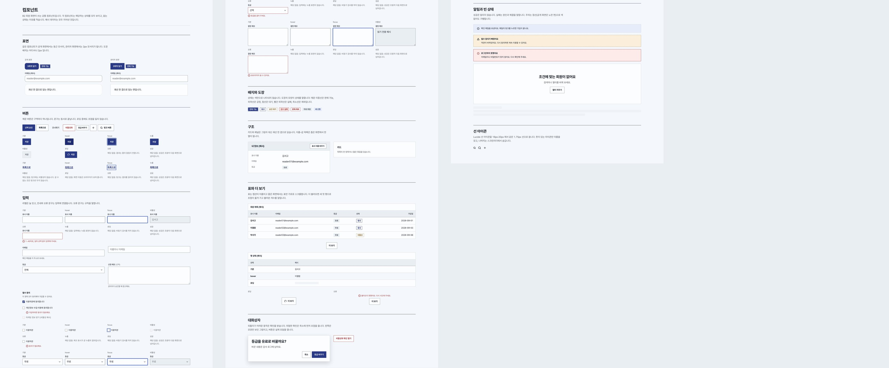

Component Standards
구조와
상태 기준
화면이 달라져도 같은 구조와 크기, 상태를 유지하는 공통 컴포넌트입니다. 모든 화면은 이 컴포넌트로만 만들고, 상태마다 모양과 문구를 정해 두었습니다.
- 상태 표기
- 기본 · 호버 · 포커스 · 로딩 · 비활성
- 터치 영역
- 최소 44 × 44px 공개 화면
- 주요 버튼
- 영역마다 하나
- 버튼 문구
- 동작이 드러나게 "3회차 담기"
01 / Button
버튼
주요 · 보조 · 위험 · 텍스트
default선택한 회차 담기
hover선택한 회차 담기
focus선택한 회차 담기
loading담는 중
disabled선택한 회차 담기
secondary조건 지우기
danger주문 취소
dense · 관리자가격 저장
soft · 공개검색
- BTN-1주요 버튼은 하나만한 영역에 주요 버튼은 하나만 두고, 나머지는 보조 버튼으로 만듭니다.
- BTN-2로딩 중에는 비활성페이지 로딩이 끝나기 전에 제출 버튼이 눌려 잘못 전송되지 않도록, 로딩 중에는 버튼을 비활성화합니다.
- BTN-3되돌릴 수 없는 동작주문 취소·제외처럼 되돌릴 수 없는 동작은 확인 모달을 띄우고, "그대로 두기" 버튼에 먼저 포커스를 둡니다.
02 / Input
입력과 선택
시장 골목 떡집의 마흔 해1~200자
-1,0000부터 100,000,000 사이의 정수로 입력해 주세요.
실화 네이티브 셀렉트 박스
✓원고 등록 책임 고지를 확인했어요 (필수)
외부 AI 처리에 동의해요 (선택)
오류 메시지는 입력란 바로 아래에 무엇이 틀렸고 어떻게 고치면 되는지 적습니다. 제출에 실패하면 첫 번째 오류 입력란으로 포커스를 옮깁니다.
03 / Feedback
알림과 모달
이미 주문했거나 구매한 회차예요.
결제가 확인되면 내 서재에서 전문을 읽을 수 있어요.
찾는 장면이 없어요다른 검색어나 조건으로 찾아보세요.
주문을 취소할까요?
취소한 주문은 되돌릴 수 없어요. 다시 사려면 새로 주문해 주세요.
그대로 두기주문 취소
저장에 성공하면 별도 토스트 없이 화면에 바뀐 값을 바로 보여 줍니다. 누른 버튼이 사라지는 경우에는 바뀐 상태로 포커스를 옮겨 스크린 리더가 결과를 읽을 수 있게 합니다.
04 / Library
컴포넌트 페이지
제품에 포함된 컴포넌트 기준 페이지

| 분류 | 컴포넌트 |
|---|---|
| 동작 | 버튼, 버튼형 링크, 텍스트 링크, 확인 모달 |
| 입력 | 텍스트 필드, 텍스트 영역, 셀렉트 박스, 체크박스, 라디오, 파일 첨부, 필드셋 |
| 표시 | 상태 배지, 배지, 정보 목록, 카드, 패널, 페이지 타이틀 |
| 목록 | 데이터 테이블, 더 보기, 필터 폼, 빈 상태, 스켈레톤 |
| 레이아웃 | 공개 레이아웃, 관리자 레이아웃, 본문 건너뛰기, 알림 |